Благотворительный фонд "Водный мир" был открыт 23.07.2019 года. Основная цель обеспечить для различных гидробионтов благоприятную для получения популяций и поддержания экосистемы в Ставропольском крае.
В современной промышленности, сельском и лесном хозяйствах и различных их отраслях используется огромное количество различных веществ, многие из которых в конечном итоге попадают в водоемы
Яды промышленных сточных вод, пестициды, минеральные удобрения, сельскохозяйственные стоки, попадая в водоемы, губительно действуют на молодь и икру рыб, уничтожают нерестилища и нагульные угодья, ограничивают миграции, снижают резистентность организма рыб, вызывают болезни, ухудшают качество рыбной продукции. Загрязненные сточные воды изменяют физические, физико-химические и химические свойства воды водоемов, изменяют количество и качество кормовых организмов, нарушают биологическое равновесие в водоеме и процессы самоочищения, тесно связанные с жизнедеятельностью одноклеточных организмов — бактерий, водорослей и простейших.
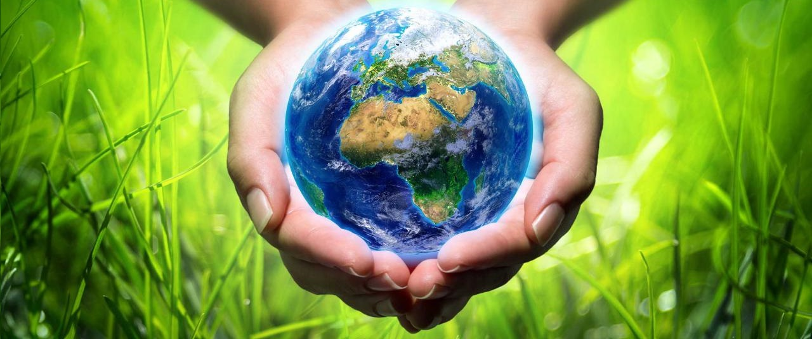При защите от эрозии важно верно расположить поля и дороги, вести горизонтальную обработку участков, предотвращение роста оврагов.
Под браконьерством стоит понимать намеренное нарушение правил и установленных норм охоты. С целью обогатиться и заполучить добычу по дороже, ответственные лица совершают поступки, которые караются законом. В виде наказания могут быть выписаны штрафы, но также человека могут привлечь к административной или уголовной ответственности.
Сегодня пластиковыми изделиями пользуется каждый человек. Ежедневно люди сталкиваются с пакетами, бутылками, упаковками, емкостями и другим мусором, который наносит неисправимый вред нашей планете. Трудно представить, но только пять процентов от общей массы перерабатываются и подходят для вторичного использования. На протяжении последнего десятилетия изготовления пластиковых изделий достигло апогея.
В наше время загрязнение окружающей среды происходит ежеминутно. Источники изменений экологической системы могут быть механического, химического, биологического, физического характера. Каждый из них вносит необратимый вклад в атмосферу Земли и ухудшает её состояние.
Азовская белуга
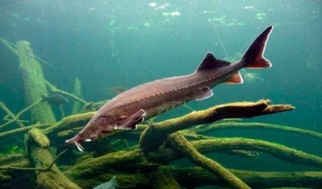Стерлядь
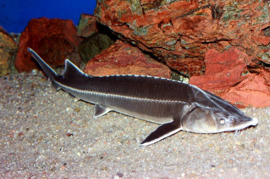Азовский пузанок
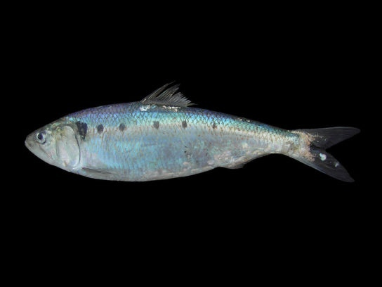Черноморская кумжа
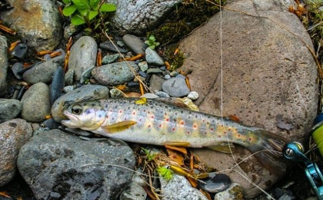Проходная каспийская кумжа
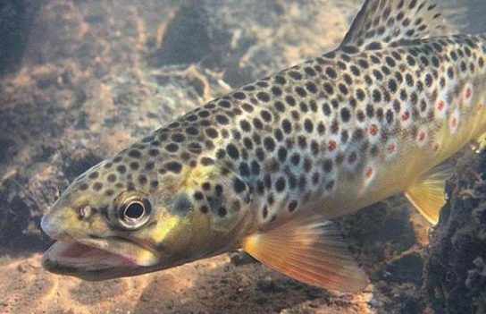Кутум
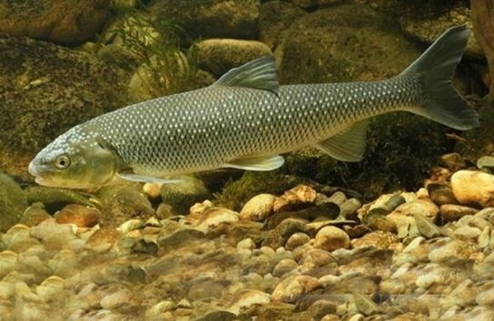Азово-черноморская шемая
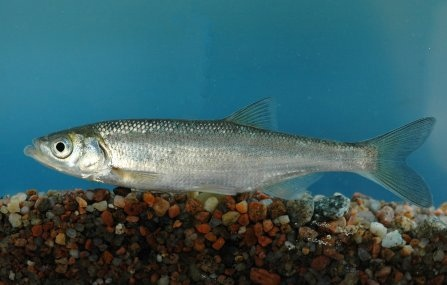Обыкновенный рыбец
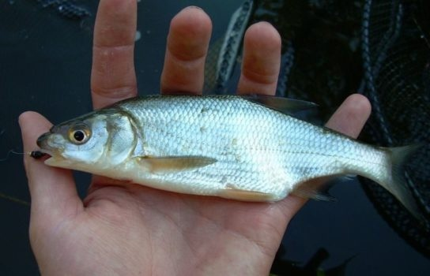Предкавказская щиповка
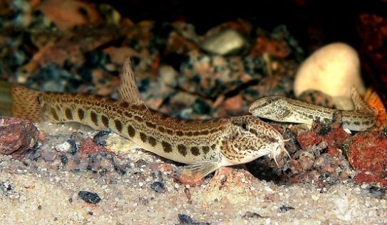Каспийская минога
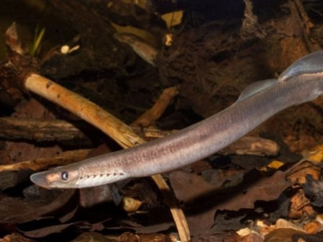Украинская минога
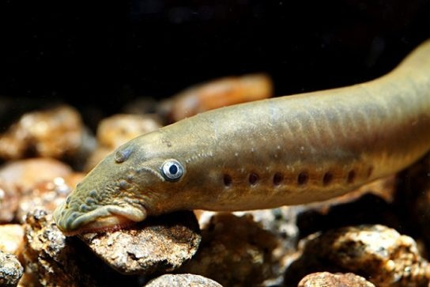